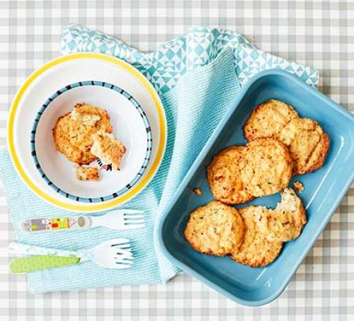

Cauliflower cheese cakes
|  | Whip up these easy cauliflower cheese cakes for your toddler at kunch or dinner time.They're great for baby-led weaning and easy to freeze. |
Ingredients:
- oil,for greasing
- ½ head of cauliflower, cut into florets(about 200g)
- 1 slice bron bread, ripped into chunks
- 1 egg
- 50g greated cheddar
- a few chives, snipped
Method
- Heat the oven to 180C/160 fan/gas 4 and line a baking tray with foil. Brush with a little oil. Put the cauliflower in a steamer over boiling water and cook for around 8 mins or until tender. Allow to cool.
-
Put the bread into a food processor and blitz to crumbs. Add the cauliflower, egg, grated cheese, chives and a little black pepper and pulse until you have a chunky consistency.
-
Form into 8 patties. Arrange them on the baking tray and cook for 20 mins until golden and starting to crisp around the edges.